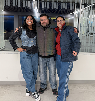

Kynd: Familiarity, Orientation, and Spatial Audio

Kynd examines how augmented reality and spatial audio can support orientation for people experiencing memory loss. The prototype shifts focus away from screen-based prompts and toward localized audio cues delivered within the user's immediate surroundings, treating familiar voices and spatial position as primary interaction materials. Focusing on the form, timing, and acoustic placement of a cue allows the prototype to offer useful context while preserving user agency.
- Format: Augmented-reality prototype and spatial audio interaction
- Context: MIT Reality Hack, Cambridge, MA, 2026; Honorable Mention, Community Hack
Kynd organizes its proposed interaction around three stages: Trigger, Cue, and Result. In this sequence, a facial-recognition event initiates a brief spatial-audio whisper identifying a familiar loved one, moving assistance off a conventional screen and into the user's physical environment. Prototyping this sequence surfaces critical questions around acoustic timing, physical proximity, recognition errors, consent, privacy, and the ability to dismiss or correct an unwanted prompt. This frames accessibility as a question of interaction design and relational trust alongside technical performance.
- Methods: Participatory prototyping, spatial audio mapping, cognitive load evaluation
- Hardware / Tools: Ray-Ban Meta platform, Figma, spatial audio synthesis
- Recognition: MIT Reality Hack 2026 — Honorable Mention, Community Hack

